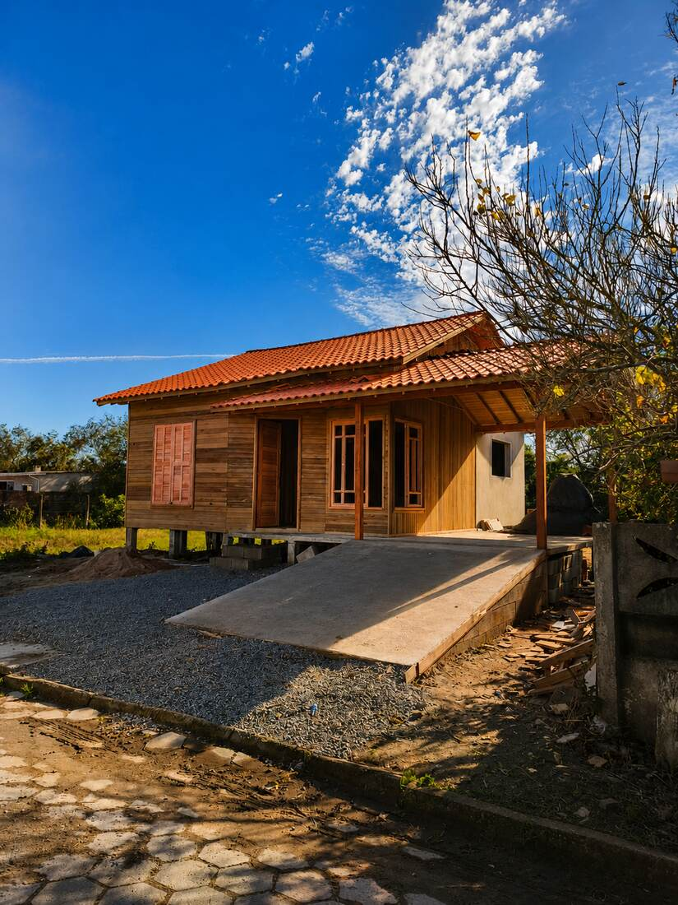

Projeto e terreno
Conferimos a planta, implantação, acesso à obra e condições do terreno para organizar as etapas e o escopo da construção.
A JP Carpintaria executa casas de madeira e estuda soluções em wood frame para projetos residenciais. Começamos pela planta, terreno, fundação, aberturas, cobertura e acabamentos que você deseja.
Falar sobre meu projeto
Conferimos a planta, implantação, acesso à obra e condições do terreno para organizar as etapas e o escopo da construção.
O sistema construtivo, as ligações, ancoragens, vãos e tipo de telhado são definidos conforme o projeto e as verificações técnicas necessárias.
Separamos o que está incluído em fundação, estrutura, fechamento, cobertura, instalações e acabamento, com condições documentadas na proposta.
Envie a cidade, planta ou croqui, metragem aproximada, número de pavimentos e fotos do terreno. Com esses dados, conseguimos entender melhor o serviço e combinar uma visita quando necessário.
Enviar informações pelo WhatsApp